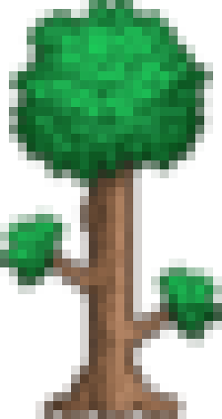
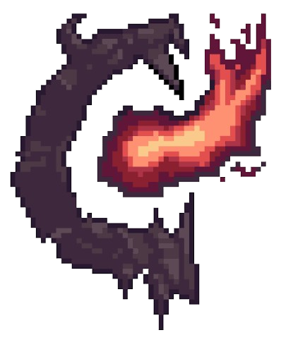

Terraria e Calamity Mod

O que é Terraria?Terraria é um jogo de aventura e exploração em 2D. O jogador pode explorar um mundo aberto, coletar recursos, construir casas, criar equipamentos e enfrentar diversos inimigos e chefes.
O jogo não possui apenas um caminho obrigatório. O jogador pode explorar diferentes áreas e melhorar seus equipamentos enquanto avança na aventura.

O que é o Calamity Mod?Calamity Mod é uma modificação criada para Terraria que adiciona uma grande quantidade de novos conteúdos ao jogo. Ele acrescenta novos chefes, armas, armaduras, inimigos, biomas, itens e desafios.
O mod também aumenta a dificuldade e adiciona uma progressão própria, fazendo com que a aventura fique muito maior e mais desafiadora.
Progressão
Escolha uma etapa para acompanhar os principais marcos da aventura.
Chefes
Confira a ordem dos principais desafios.
Dicas
A progressão no Calamity pode ser bastante desafiadora, principalmente para quem está jogando o mod pela primeira vez. Por isso, é importante explorar o mundo antes de enfrentar os chefes e procurar novos equipamentos, materiais e acessórios.
- Explore bastante: diferentes biomas e estruturas adicionam recursos e itens úteis para a aventura.
- Prepare uma arena: antes de enfrentar um chefe, construa uma área com espaço suficiente para se movimentar e desviar dos ataques.
- Melhore seus equipamentos: sempre procure armas, armaduras e acessórios adequados para a etapa atual da progressão.
- Use poções: poções de vida, mana e outros bônus podem fazer uma grande diferença durante as batalhas.
- Observe os padrões dos chefes: aprender os movimentos e ataques de cada chefe é tão importante quanto ter bons equipamentos.
- Não tenha pressa: se um chefe estiver muito difícil, explore outras áreas e tente conseguir equipamentos melhores antes de enfrentá-lo novamente.
- Acompanhe a progressão: a ordem recomendada serve como um guia, mas o Calamity permite diferentes caminhos e alguns chefes podem ser enfrentados em ordens diferentes.